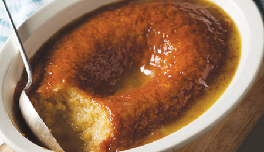

South African Malva Pudding

Ingredients
Pudding
- 2 tablespoons butter
- 1 teaspoon white vinegar
- ½ cup milk
- 1 cup superfine sugar
- 2 eggs
- 1 tablespoon apricot jelly
- 1 ⅓ cups cake flour
- 1 teaspoon baking soda
- 1 pinch salt
Sauce
- 1 cup heavy cream
- ½ cup butter
- ½ cup white sugar
- ½ cup water, orange juice, or sherry
Directions
-
Preheat oven to 350 degrees F (175 degrees C). In a small saucepan over
low heat, melt 2 tablespoons butter or margarine together with vinegar
and milk. Remove from heat, and set aside. Meanwhile, sift flour, baking
soda, and salt together into a separate bowl.
-
Beat 1 cup sugar and eggs with an electric mixer on high speed until
fluffy and light colored, about 5 minutes. Gradually mix in the apricot
jam. Fold the dry ingredients into the egg mixture alternately with
warmed milk mixture using a spatula. Pour batter into a greased, 1 quart
oven-proof baking dish.
-
Bake approximately 45 minutes, or until a knife inserted into the center
comes out clean.
-
Place cream, butter, 1/2 cup sugar, and water in a saucepan and stir
over moderate heat until the butter has melted and sugar is dissolved.
Do not allow the mixture to boil.
-
Remove pudding from the oven, pierce several times with a skewer or
fork, and pour the hot cream mixture immediately over the pudding. Serve
hot or cold.